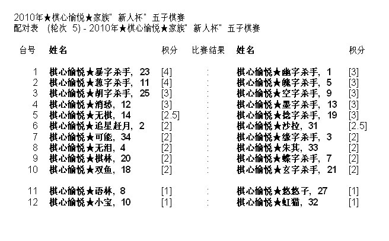
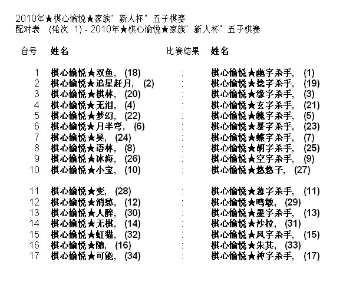
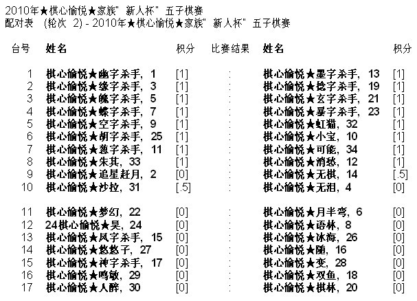
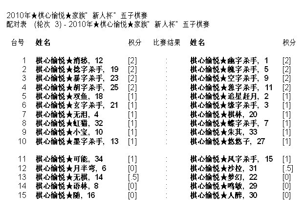

积分编排制的一个棘手问题
#1 积分编排制的一个棘手问题作者：我就不信注册不上 发表时间：2010-7-18 12:01:16
原讨论发表在棋心愉悦版块（原文地址：ShowPost.asp?ThreadID=10719），但莫名被龙小小版主屏蔽。好吧，本着尊重龙小小的意见的原则，同时本着跟广大棋友讨论问题的精神，换个方式发表。棋心愉悦家族赛第五轮配对表，如图：

这个问题在于，前四轮连胜的两个人，第五轮没有配对。根源呢，是主持编排者选择了软件的禁三先、禁三后的设置。
前四轮的情况是：11号第一轮后手，第二轮先手，第三轮后手，第四轮后手；11号第一轮后手，第二轮后手，第三轮先手，第四轮后手。
第五轮呢，如果两人相遇，必有一人多走三个后手（一个先手+四个后手），11号更是要连走三个后手，这显然与禁三先、禁三后的设置相矛盾，因而呢，两人被拆散了。
其实呢，这个软件来源于国际象棋，国际象棋的竞赛规则中明确禁止连走三先、连走三后、多走三先、多走三后，因而在遇到三先、三后的时候，平衡先后手的优先级高于积分的优先级（积分不再是编排的第一条件）。
#2 Re:积分编排制的一个棘手问题作者：我就不信注册不上 发表时间：2010-7-18 12:02:15
其实呢，这个问题不必要大惊小怪的，还好不是最后一轮，调整一轮先后手之后，下一轮就可以配对了，还算让人好理解一些。
我现实比赛还碰上过禁四先、禁四后的，竟然也出现了最高分不能配对的情况，当时前五轮一者四先一后，另一者三、四、五轮连先，因而两人无法配对，否则要么前者多走四先、要么后者连走四先。当时的编排者跟组委会解释了将近半个小时，最后是以还好不是最后一轮的说法算是混过去了。
其实这些还不够极端，最麻烦的是山东潍坊一次现实比赛，最后一轮，前两名怎么算也是死签，却愣是因为禁三先、禁三后的规则给拆散了。据说争议一直持续了半年之久，好像最后是不了了之了
#3 Re:积分编排制的一个棘手问题作者：陈国良 发表时间：2010-7-19 14:11:04
你说得很对。那天晚上因为是网络赛，时间紧排好后没有仔细核对就发出去了。其实如果没有发布出去，因为不是最后一轮，所以这起一轮忽略先后手排一下就可以了。看起来以后不管时间多紧也得仔细核对几次！ 不是最后一轮还是好解决的。
倒是你说的最后一轮，碰到了真不是件好办的事！
#4 Re:积分编排制的一个棘手问题作者：十五道圣 发表时间：2010-7-19 15:02:33
引用：没看懂！把配对卡贴出来看看。要看三个近分段的情况。
原文由 我就不信注册不上 发表于 2010-7-18 12:01:16 :原讨论发表在棋心愉悦版块（原文地址：ShowPost.asp?ThreadID=10719），但莫名被龙小小版主屏蔽。好吧，本着尊重龙小小的意见的原则，同时本着跟广大棋友讨论问题的精神，换个方式发表。棋心愉悦家族赛第五轮配对表，如图：
这个问题在于，前四轮连胜的两个人，第五轮没有配对。根源呢，是主持编排者选择了软件的禁三先、禁三后的设置。
前四轮的情况是：11号第一轮后手，第二轮先手，第三轮后手，第四轮后手；11号第一轮后手，第二轮后手，第三轮先手，第四轮后手。
第五轮呢，如果两人相遇，必有一人多走三个后手（一个先手+四个后手），11号更是要连走三个后手，这显然与禁三先、禁三后的设置相矛盾，因而呢，两人被拆散了。
其实呢，这个软件来源于国际象棋，国际象棋的竞赛规则中明确禁止连走三先、连走三后、多走三先、多走三后，因而在遇到三先、三后的时候，平衡先后手的优先级高于积分的优先级（积分不再是编排的第一条件）。
#5 Re:Re:积分编排制的一个棘手问题作者：我就不信注册不上 发表时间：2010-7-19 16:02:58


